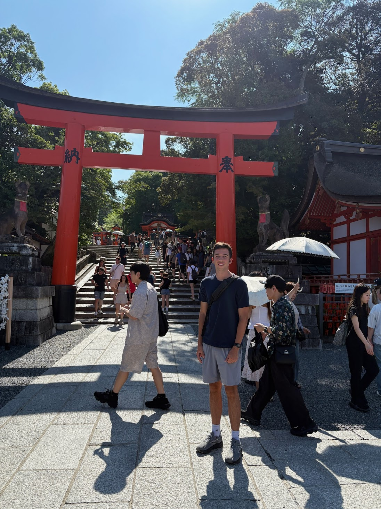

Who I Am
I chose to major in Computer Science because it is one of the largest growing fields right now. It all started with Robotics and I also took many Computer Science classes in high school. When I got to the University of Missouri, I didn't know how to code in C, but it is very similar to Java and JavaScript which I know pretty well. Overall, it has strengthened my understanding in programming. The coursework at Mizzou has challenged me in many ways, forcing me to study for exams and manage my time effectively. Beyond that, I joined a fraternity that has helped me adjust to college life while still having a strong focus on my academic goals.

Education & Activities
Currently, I am pursuing a degree in Computer Science at the University of Missouri - Columbia with an estimated completion date of 2029.
- University of Missouri - Columbia (Computer Science - 2029)
- Blue Valley North - 2025
- First Robotics Competition Team Member
- National Honors Society
- Active Fraternity Member